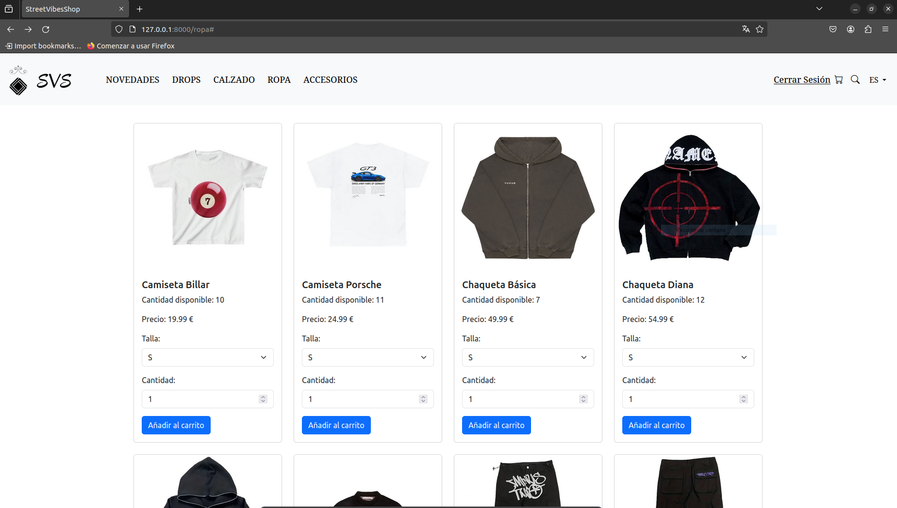
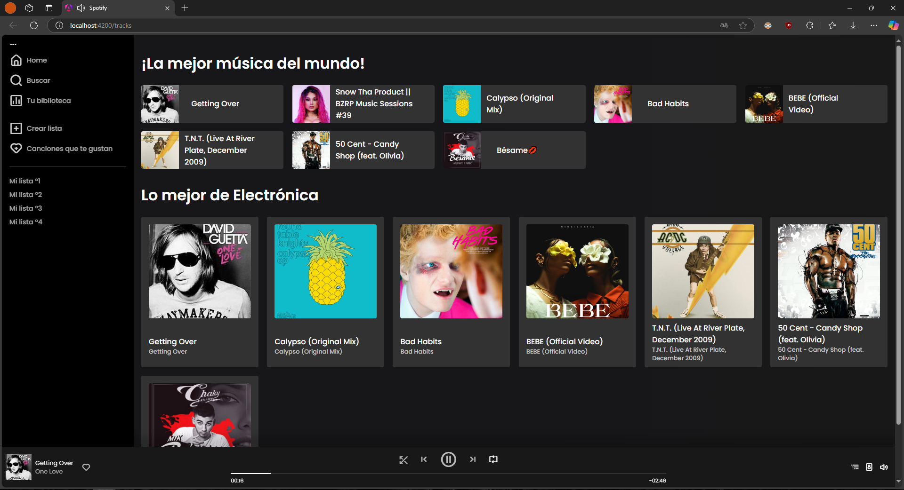

Proyectos
CODI Transport
CODI Transport es una aplicación web desarrollada para optimizar la gestión del transporte escolar,
permitiendo a los responsables controlar la asistencia de los niños en cada turno de manera rápida,
intuitiva y accesible desde cualquier dispositivo. Proporcionando una experiencia moderna, fluida y totalmente responsive.
🔐 Roles de usuario:
• Responsable: Puede ver únicamente a los niños asignados a su cuenta, marcando asistencia, reseteando estados con un clic, eliminando y añadiendo nuevos niños.
• Administrador: Accede a todos los turnos y registros, pudiendo insertar nuevos niños mediante un formulario conectado directamente a Firestore.
🧭 Objetivo del proyecto:
Facilitar la organización y control del transporte escolar mediante una herramienta digital accesible,
mejorando la comunicación entre administradores y responsables, y ofreciendo una gestión centralizada y en tiempo real.

StreetVibesShop
StreetVibesShop es mi Trabajo de Fin de Grado, una tienda online de moda urbana que permite explorar productos, gestionar compras y realizar pedidos de forma intuitiva.
Desarrollado con Symfony en el backend, usa Doctrine y phpMyAdmin para la base de datos, Apache como servidor y GitHub para control de versiones. En el frontend, empleé Twig y Bootstrap para una interfaz responsive.
🔐 Roles de Usuario:
Administrador: Acceso completo y gestión mediante EasyAdmin.
Manager: Visualización de reportes de ventas y analíticas.
📽️ Demo del Proyecto
El video demostración es la continuación de mi presentación del TFG, donde explico el funcionamiento de la plataforma en detalle.

Clon de Spotify
Este proyecto es una implementación de un clon de Spotify, realizado como parte de un proyecto guiado.
Utilizando Angular en el frontend y Node.js en el backend, el objetivo fue recrear una interfaz similar a la de Spotify con funcionalidades
esenciales como reproducción de canciones, control de volumen y gestión de listas de reproducción.
También se integraron medidas de autenticación, validación de usuarios, y se implementó una estructura de backend con Node.js para gestionar las peticiones.
Además de seguir el tutorial marcaddo por el profesor, añadí varias características personalizadas al proyecto que explico en esta documentación.
